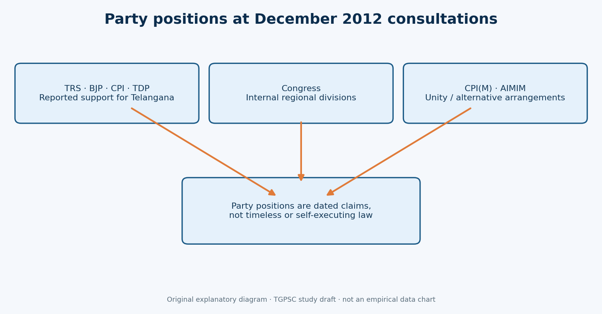
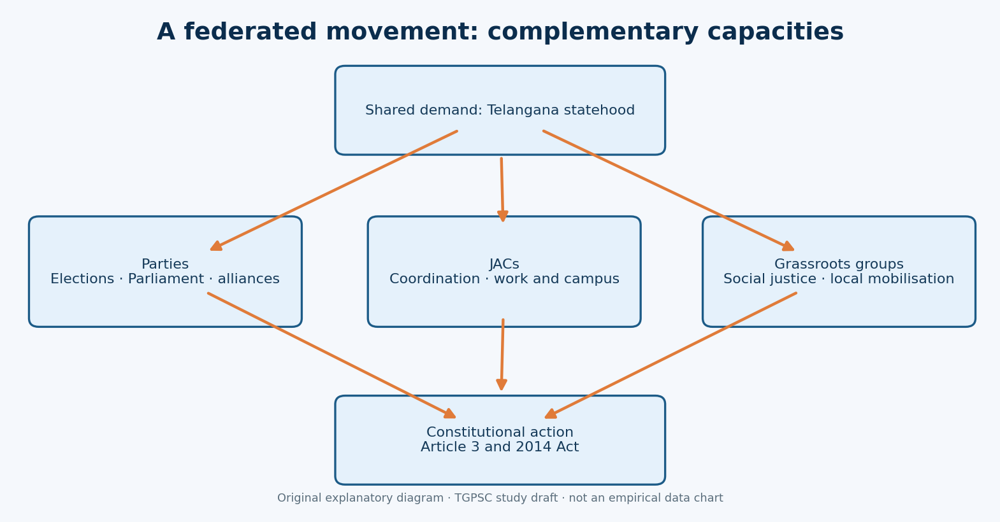
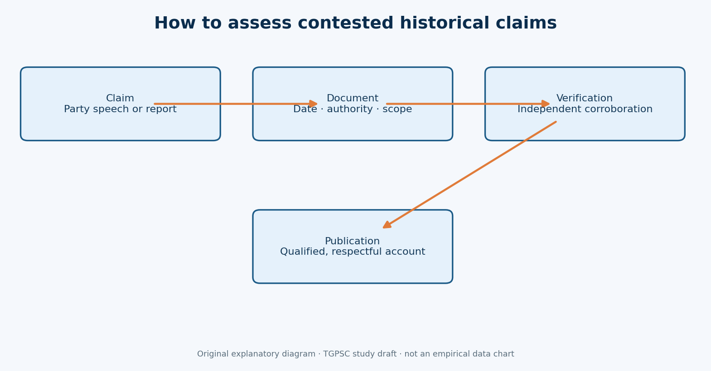

← Back to 75-topic portal · Full PDF · Editable Markdown
TGPSC Group I Mains | Original English study draft | 25 October 2026 | Independent academic review pending
Syllabus authentication: Exact clause directly located in the original commission-hosted 50-page Notification 02/2024, dated 19 February 2024. The historical source audit below separately distinguishes directly opened institutional material from contemporary reporting and missing originals. Every practice question is original; none is labelled an official previous-year question.
Role of Political Parties-TRS, Congress, B.J.P., Left parties, T.D.P., M.I.M and other political parties such as Telangana Praja Front, Telangana United Front etc., Dalit-Bahujan Sanghams and Grass roots Movement organisations - Other Joint Action Committees and popular protests- Suicides for the cause of Telangana.
| Syllabus component | Main chapter coverage | Study focus |
|---|---|---|
| TRS, Congress, BJP, Left, TDP, MIM | Sections 4–11, 33 | Dated positions, power and regional contradictions |
| Telangana Praja Front, United Front | Sections 17–18 | Electoral versus non-electoral strategy |
| Dalit-Bahujan and grassroots sanghams | Sections 19–21, 32 | Inclusion, social justice and local networks |
| Other JACs | Sections 12–16, 22 | Political, employees, students and lawyers coordination |
| Popular protests | Sections 23–28, 31 | Repertoire, strikes and rights |
| Suicides associated with the movement | Sections 29–30, Case 6 | Ethical and evidence-sensitive treatment |
The movement's distinctive achievement was coordination among actors with different resources and conflicting political strategies. TRS converted statehood into electoral bargaining; Congress and national parties affected Union decision-making; JACs linked occupational networks; grassroots groups demanded social justice; and protest raised the political costs of delay. Political claims and casualty figures require independent evidence, while only Parliament could enact state reorganisation.



Core argument: Telangana statehood was advanced through an interaction of party politics, federated JACs, grassroots mobilisation and constitutional action. The political goal could be shared even where strategies and future social priorities differed.
| Actor | Characteristic contribution | Important qualification |
|---|---|---|
| TRS | Regional electoral platform, alliances and parliamentary pressure | Not identical to the whole movement |
| Congress | Union governmental agenda; regional MPs pressing for statehood | Internal three-region divisions |
| BJP | Explicit statehood advocacy and opposition pressure | Support did not equal Union executive authority |
| CPI | Supported separate Telangana in 2012 snapshot | Do not conflate with CPI(M) |
| CPI(M) | Preferred united Andhra Pradesh in 2012 snapshot | Position must be dated |
| TDP | Formal 2008 pro-Telangana resolution and 2012 reiteration | Cross-regional organisational conflict |
| AIMIM | Hyderabad and minority safeguards; unity/Rayala-Telangana alternative | Not every Hyderabad resident shared its view |
| TPF | Gaddar-led non-electoral mass-movement emphasis | A front, not a state-creation authority |
| TUF | More open to electoral means alongside popular action | Original founding chronology not independently settled |
| Political JAC | Coordination across parties and associations | Umbrella body, not Parliament |
| Employees/students/lawyers JACs | Workplace, campus and professional mobilisation | Autonomous groups with different rules |
| Dalit-Bahujan and grassroots groups | Social justice, representation and local networks | Statehood did not automatically eliminate inequality |
Chronology: 2001 TRS founded → 2004 coalition bargaining → December 2009 Political JAC → October 2010 Telangana Praja Front → February 2011 non-cooperation → September 2011 Sakala Janula Samme → December 2012 dated all-party position snapshot → 2014 statutory state formation.
Distinguish: party resolution ≠ statute; JAC ≠ political party; protest demand ≠ legal entitlement; original government order ≠ press summary; reported deaths ≠ certified causally attributed totals; CPI ≠ CPI(M); TPF ≠ TUF.
Mains headings to memorise: background; differentiated party positions; JACs and occupational networks; Dalit-Bahujan and grassroots participation; methods of protest; contradictions and human cost; constitutional outcome and conclusion.
Five quick self-tests: Why could Congress both delay and enable statehood? Why did TDP's written support coexist with ambiguity? Why is the TPF/TUF disagreement about methods rather than goals? How do appointment rosters differ from slogans as evidence? Why is an unverified suicide count unsuitable for a model answer?
The later Telangana movement cannot be explained by listing parties that supported or opposed a new state. The analytical question is how a regional demand passed through three partly competing channels: elections and parliamentary bargaining; organised associations and joint action committees; and ordinary people mobilising in villages, colleges, offices and public spaces. Each channel created leverage but also imposed constraints. A party required candidates and alliances; an employees' organisation needed credible service-rule evidence; a student body relied on campus networks and could not enact legislation. The movement's reach grew because these channels sometimes coordinated without becoming identical. This distinction is the backbone of a strong mains answer.
The period is chiefly 2009–2014, with indispensable roots in 2001 and earlier civil-society campaigns. Political positions were not static. Congress legislators from Telangana could favour separation while leaders from coastal Andhra or Rayalaseema opposed it. The Telugu Desam Party could adopt a formal pro-Telangana letter while struggling to reconcile regional units. The CPI and CPI(M) were different parties with different positions. Telangana Praja Front was described by its founders as a people's front, not simply another electoral party. These qualifications prevent the false conclusion that each party acted as a single unchanging voice.
TRS transformed statehood into a recognisable electoral demand after its establishment in April 2001. Yet elections did not remove uncertainty about the Union government's willingness to initiate Article 3 legislation. The 2004 coalition language was conditional, the 2009 alliances were contested, and December 2009 announcements were followed by further consultations. Those gaps between political promise and legal enactment created space for independent organisations to ask whether party leaders were accountable to the movement or primarily to electoral arithmetic.
Grassroots mobilisation supplied an answer through public pressure: district-level meetings, demonstrations, professional boycotts, petitions, symbolic cooking on roads, rallies and strikes. These tactics did not all have the same social cost. A march could amplify visibility but invite policing; an indefinite public-sector strike could signal collective resolve while interrupting essential services; a petition could document a grievance but lack immediate bargaining power. Explaining the choice of tactic, its intended audience and its costs is more valuable than describing every protest as simply 'massive'.
Article 3 of the Constitution places the power to form a new state with Parliament, subject to the prescribed process involving the President's recommendation and reference of the proposal to the affected state legislature for its views. A party resolution, a JAC declaration, an all-party consultation or a Union minister's statement is politically important but is not itself a state-creation law. The Andhra Pradesh Reorganisation Act, 2014 eventually provided the statutory basis for Telangana's formation on 2 June 2014; the detailed parliamentary process belongs to the next syllabus topic.
The boundary helps assess political claims. Parties could promise to support a bill, mobilise MPs, negotiate transitional arrangements or raise questions about Hyderabad. They could not make a state by passing a party resolution. Likewise, a JAC could coordinate agitation and sustain accountability but could not replace elected legislatures. A constitutional answer should distinguish popular legitimacy, executive agenda-setting, parliamentary competence and administrative implementation rather than treating them as interchangeable.
The Telangana Rashtra Samithi (TRS), founded by K. Chandrashekar Rao in 2001, made a separate Telangana its defining political objective. It organised candidates and campaigns, entered alliances and carried the issue into legislatures and national coalition negotiations. During the 2009–13 mobilisation, TRS leaders participated in public protests and used parliamentary interventions to signal that the demand was not merely local. Its electoral role mattered because central parties had to calculate whether delay could affect seats and coalition stability.
However, party leadership and movement leadership should not be equated. Professor M. Kodandaram's political JAC, students, employees, writers and social organisations were not TRS subsidiaries. They could cooperate on statehood while disagreeing over alliances, nominations, leadership, class demands and caste representation. An answer that calls TRS the 'only' agent ignores the independent capacity of these actors. A fair assessment credits the party with converting the issue into electoral bargaining, while recognising that public mobilisation supplied much of the pressure that made the bargaining consequential.
The 2004 Congress–TRS alliance placed Telangana in the vocabulary of national coalition politics, but the conditional wording of the UPA's Common Minimum Programme did not specify an enforceable creation date. TRS's participation in Union-level arrangements therefore generated access to decision-makers and expectations among supporters. When statehood did not follow quickly, critics argued that electoral bargaining had failed to deliver the central objective. The 2009 Mahakutami alliance, which included TDP, showed that parties with different histories could temporarily cooperate electorally while retaining competing constituencies.
The general principle is a coalition dilemma. Entering an alliance may increase the probability of influencing a government, but it also requires concessions and exposes the smaller party to the larger partner's changing priorities. Rejecting alliances preserves rhetorical independence but may reduce parliamentary influence. Telangana politics repeatedly confronted this choice. For mains, explain both the benefit of national access and the cost of ambiguous commitments; avoid assigning motives without party minutes or original coalition documents.
The Indian National Congress occupied a distinct position because the Union government led by the UPA ultimately had to place state reorganisation on the national agenda. Yet the party contained Telangana legislators seeking separation and representatives from the other two regions defending unity or seeking safeguards. The centre had to consider electoral effects, Hyderabad's status, administration, water, revenue, employment and the consequences for the residuary state. This made Congress's role both indispensable and internally contradictory.
In February 2011 contemporary reporting recorded Telangana Congress MPs seeking a meeting with the party's core committee and pressing for a decision. That demonstrates why it is inaccurate to write 'Congress opposed Telangana' as a timeless proposition. Equally, it is misleading to treat the eventual 2013 Union decision as proof that all party factions had supported it throughout. A good answer traces the difference between a national leadership decision, regional factional demands, cabinet responsibility and the final statutory action.
The Bharatiya Janata Party supported the creation of Telangana and could use opposition politics, parliamentary debates and public meetings to criticise UPA delay. BJP leaders appeared in JAC-associated public programmes, including the August 2011 Hyderabad sit-in reported by PTI. Its position drew on a wider argument that smaller states could be administratively viable and more responsive, although administrative performance depends on institutions and resources rather than boundaries alone.
The BJP's significance was not simply a promise to create Telangana if elected. It provided another national-party route for the demand, making it harder to present statehood as the property of a single regional party. At the same time, the party's electoral strength, local organisational reach and bargaining power varied across Telangana districts. Analysts should separate public support, actual parliamentary voting and the constitutional competence of the Union government. An opposition party can influence debate without possessing executive authority to introduce and implement a reorganisation programme.
The Communist Party of India (CPI) publicly supported separate Telangana by the 2012 all-party consultations, while the Communist Party of India (Marxist), or CPI(M), preferred a united Andhra Pradesh. The difference reflected competing analyses of linguistic states, class solidarity, regional inequalities and the risks of fragmentation. For CPI supporters of separation, regional grievances and popular demands justified a new political unit. For CPI(M) defenders of unity, redistribution and safeguards within a united state could be more desirable than changing borders.
Neither view is adequately summarised as 'Left for' or 'Left against'. Left organisations also participated in labour, land and civil-liberties movements whose members might hold distinct views from central party resolutions. In an exam, name CPI and CPI(M) separately, date the position where possible, and distinguish a party's institutional stand from that of allied trade unions or independent left-leaning activists. This is a useful example of why ideological families do not automatically produce uniform policy conclusions.
The Telugu Desam Party historically promoted Telugu linguistic identity across the united state. Its 2008 politburo resolution and subsequent letter to Pranab Mukherjee supported separate Telangana, and a December 2012 letter stated that the earlier position had not been withdrawn. Yet contemporary reports documented tension between Telangana TDP leaders and those representing Andhra and Rayalaseema. In March 2010 the JAC accused the party of ambiguity; TDP supporters and lawyers clashed over perceived contradictions.
This was not merely a problem of messaging. A statewide party faced voters with different preferences over Hyderabad, public-sector employment, water sharing and capital investment. A formal letter could resolve the national leadership's public position without resolving grassroots conflicts. Students should cite the dated 2008 and 2012 letters as reported, but avoid assuming that every regional TDP legislator accepted them. The broader lesson is that territorial reorganisation places unusual stress on parties whose electoral coalitions span the proposed boundary.
The All India Majlis-e-Ittehadul Muslimeen (AIMIM or MIM) approached Telangana through concerns about Hyderabad, minority political representation and the likely consequences of bifurcation. At the December 2012 consultations, contemporary reporting described the party as preferring a united Andhra Pradesh and, if division became unavoidable, advancing a Rayala-Telangana alternative with Hyderabad as capital. Such a position should be analysed as a territorial and minority-security proposal, not dismissed as mere hostility to Telangana identity.
Hyderabad was simultaneously a historic city, a shared economic centre under united Andhra Pradesh and a place where different linguistic and religious communities lived. The central question was how to protect equal citizenship, local institutions, policing and access to public services under any boundary. A balanced mains answer compares MIM's concern for urban and minority safeguards with the separate-state argument that Hyderabad was integral to Telangana's history and political future. Do not claim all Hyderabad Muslims shared a single view.
A December 2012 snapshot is useful precisely because it is dated. Contemporary reports summarised BJP, CPI, TRS and TDP as favouring Telangana; Congress as divided; CPI(M) as favouring unity; and AIMIM as favouring unity with a conditional Rayala-Telangana alternative. This table must not be projected backward to 2001 or forward unchanged to the final parliamentary vote. Party leadership changed, constituencies evolved, and the 2013 Union decision reshaped incentives.
A rigorous comparison needs four columns: stated position, source date, institutional leverage and internal constraints. TRS had regional electoral mobilisation; Congress had Union executive responsibility; BJP had opposition leverage; TDP faced cross-regional splits; CPI and CPI(M) reflected distinct left analyses; AIMIM foregrounded Hyderabad. The analytical value lies in the relation between position and capacity. Supporting a cause did not guarantee that a party could implement it, while resisting one boundary did not preclude advocating protections under another arrangement.
The Telangana Political Joint Action Committee formed in December 2009, commonly dated 24 December, with Professor M. Kodandaram as a prominent convenor. It linked political leaders, professional associations and civil-society organisers around the statehood objective. A JAC is an umbrella coordination mechanism, not a statutory government body or an electoral party. It can issue protest calls, negotiate schedules and give visibility to common demands while its constituents retain separate identities and priorities.
The JAC model solved a collective-action problem: employees, students, advocates and politicians had different resources and could coordinate dates, routes and demands. But it also created accountability problems. Who authorised a shutdown? Could a party leave the coalition? Would the concerns of rural Dalits, Adivasis or informal workers be represented when major party leaders dominated a platform? Contemporary disputes with TDP and the formation of alternative fronts show that coalition unity was negotiated, not automatic. Describe both its organising achievement and its representative limits.
Telangana employees' associations brought technical arguments about recruitment zones, local cadres, transfers, promotions and implementation of the Presidential Order and G.O. 610. These grievances differed from a generic cultural claim: they could in principle be examined against appointment registers, sanctioned posts, roster entries and government orders. Employees could use workplace networks and strikes to make administrative disputes politically visible. They also risked loss of wages and disciplinary consequences under service rules.
A September 2011 report described a Joint Action Committee of employees, teachers, gazetted officers and workers calling for legislators' resignations and participation in Sakala Janula Samme. It reported representatives from many affiliated associations, but those numbers are contemporary claims, not a certified membership census. The key mechanism is that public employees linked institutional knowledge to mass mobilisation. For exam answers, distinguish an allegation of a violation from a verified case determined under the applicable rules, and explain why remedies could include cadre review, transparent recruitment and administrative oversight.
Universities such as Osmania and Kakatiya became important arenas for student organisation. Student JACs mobilised marches, meetings, campus debates and protest actions, often drawing on family histories of regional inequality and concerns about future public employment. Their contribution was not confined to attendance at rallies: students framed the future of education and jobs as a reason for statehood, challenged party delays and connected campuses to district networks.
Students also faced the greatest danger when demonstrations turned confrontational. Policing, arrests, campus closures and interrupted examinations had real consequences. A responsible historical account does not romanticise confrontation or treat every participant as belonging to the same party. It asks how student unions, independent groups, hostels, faculty and local communities interacted. The same campus could contain supporters of Telangana, supporters of a united state and students primarily concerned about safety and uninterrupted study. Public universities should be studied as plural political spaces.
Advocates linked Telangana statehood to questions about representation in legal appointments, court administration and access to institutions. September 2010 reporting described lawyers demanding a regional share in appointments of government law officers, with demonstrations disrupting High Court functioning. In January 2011 lawyers' JAC representatives pressed political leaders to resign in support of statehood. These actions show how a professional grievance could become part of a wider territorial movement.
The claims require careful treatment. A proposed 42-percent share reported in a protest is a demand, not proof that the law already guaranteed that exact share in every legal post. Government-pleader appointments, judicial recruitment and local-cadre service rules operate under different legal arrangements. A strong answer therefore identifies the office concerned, the applicable recruitment authority, the evidence required and the constitutional questions. It also considers access to justice for litigants when courts are disrupted. Professional participation strengthened the movement but raised difficult public-service trade-offs.
Teachers and lecturers could translate complex issues into public discussions; transport workers could disrupt mobility; Singareni miners could affect energy supply; and local unions could sustain district-level participation. Such diversity mattered because it widened the movement beyond elected politicians and college students. A worker might join because of regional dignity, employment prospects, union solidarity or dissatisfaction with administrative arrangements. Motives cannot be inferred from membership in a union alone.
The impact of a coordinated strike was both symbolic and material. Work stoppages signalled willingness to bear costs, but they also affected wages, commuters, schoolchildren and patients. Protest organisers faced choices about essential-service exemptions and duration. A mature assessment weighs democratic rights to organise and dissent against the obligation to maintain critical services. This is not an argument against protest; it is a way to explain why a general strike was a powerful but costly instrument and why its effects cannot be reduced to crowd estimates.
Telangana Praja Front (TPF) was launched in Hyderabad on 9 October 2010 with cultural activist Gaddar as its leading figure. Contemporary accounts describe it as an umbrella front for organisations and JACs rather than an ordinary party seeking immediate electoral seats. Gaddar argued that statehood required popular mobilisation and a bill in Parliament, and criticised reliance on electoral bargains. This was a substantive strategic disagreement with parties that viewed elections and coalitions as necessary leverage.
The front also foregrounded social justice and the position of marginalised communities, thereby challenging the assumption that a new boundary alone would resolve inequality. But a non-electoral front faced its own problem: it could organise pressure without directly controlling candidate selection or parliamentary votes. Contemporary reports soon described disagreements over whether elections should be ruled out categorically. Do not call TPF a successful parliamentary party; its importance lies in the debate about democratic strategy, popular sovereignty and who should lead the statehood struggle.
Telangana United Front (TUF) is associated with Vimalakka, Keshava Rao Jadhav and Dileep Kumar, who differed with Gaddar's position on electoral participation. Contemporary reporting from October 2010 described Vimalakka and allies creating a separate platform and arguing that elections could be one instrument among many. Later study accounts give a formal formation event in February 2011 at Hanamkonda; the original founding resolution and definitive chronology were not independently obtained here. The safest formulation distinguishes the reported 2010 split from later organisational formalisation.
The disagreement is analytically valuable because both sides supported Telangana statehood. TPF emphasised popular agitation and distance from electoral bargaining; TUF was more open to using electoral mechanisms while continuing protests. The dispute illustrates a recurrent question in social movements: should independent organisations enter electoral politics, endorse candidates or pressure all parties from outside? There is no automatic answer. Each choice affects autonomy, resources, public visibility and accountability to ordinary members.
Dalit-Bahujan organisations asked not only whether Telangana should become a state, but whose interests the new state would serve. The demand for political separation could coexist with continuing caste hierarchy, landlessness, discrimination in education and unequal representation in party leadership. Activists therefore argued for social justice within the statehood project: land and livelihoods, representation in decision-making, equal public employment, protection from caste violence and meaningful access to education.
The Madiga Reservation Porata Samithi (MRPS), associated with Manda Krishna Madiga and the 1990s demand for categorisation of Scheduled Caste reservation benefits, provides a relevant background example. It should not be flattened into a 'Telangana-only' organisation: its principal social-justice demand has a history and constituency wider than the statehood movement. Likewise, not all Dalit or Bahujan organisations agreed on party alliances or the merits of bifurcation. A high-quality answer analyses how the statehood campaign opened political space for these demands without assuming that all caste inequalities disappeared in 2014.
Tribal land alienation, forest rights, displacement, education and local self-government were relevant to Telangana's wider public debates. Adivasi groups could support a separate state while insisting that Fifth Schedule protections, the Scheduled Areas land-transfer regime and later Forest Rights Act claims not be sidelined. Backward-class organisations sought representation and opportunities, while minority groups evaluated the effects of changing administrative boundaries on citizenship, security and access to services.
These constituencies cannot be treated as decorative additions to a party-led movement. Their priorities could conflict with dominant agrarian or urban interests inside Telangana. A new state might have greater local political responsiveness, but land acquisition, caste exclusion or inadequate schools could persist unless addressed by policy. The phrase 'people's movement' is therefore a claim about breadth, not proof that all sections participated equally or benefited equally. Discuss inclusion using concrete policy questions rather than celebratory generalities.
Village committees, local teachers, youth groups, caste associations, trade unions and cultural performers supplied the everyday infrastructure of mobilisation. They circulated meeting notices, organised transport, collected donations, hosted debates and linked district grievances to Hyderabad events. These tasks are easy to overlook because they rarely appear in parliamentary records. Yet a central rally requires thousands of small decisions about communication, routes, food, safety and local legitimacy.
Grassroots networks also filtered the meaning of statehood through local concerns. In one village, irrigation and farmer debt could dominate discussion; in a town, public employment and education; among artisans, loss of livelihoods; in Hyderabad, land, housing and the future of the capital. Such differences explain why a common slogan could unify participants without producing agreement on every development policy. For mains, illustrate the movement's social geography without claiming that every district or caste had identical participation levels.
The label JAC was used by political leaders, students, employees, lawyers and other occupational or local groups. These committees were related but not interchangeable. A political JAC could set a broad mobilisation calendar; a students' JAC could organise campus programmes; an employees' JAC could negotiate workplace tactics and service-related claims. This resembles a federated network: autonomous groups share an objective and coordinate selected actions while retaining their own membership rules and internal leadership.
Federation creates resilience because a movement need not stop when one party withdraws. It also produces coordination problems: duplicate calls, competition for public attention, disagreements over lawful protest and uncertainty about who speaks for the whole region. A useful analytical diagram is 'common statehood demand → multiple autonomous JACs → joint actions → pressure on state and Union institutions'. It is misleading to draw all JACs as subordinate departments of TRS or the political JAC. Their autonomy is part of the explanation for the movement's breadth.
The movement used demonstrations, dharnas, relay fasts, symbolic cooking in public places, resignations, road blockades, strikes, cultural meetings, petitions and parliamentary disruption. Each had a different mechanism. A dharna made a demand visible at a target institution; a strike withdrew labour; a resignation signalled political commitment; a cultural performance created shared language and memory; a court petition challenged a legal decision. Describing the repertoire is not the same as endorsing every tactic.
A sound answer also examines legal and ethical limits. Obstruction of emergency vehicles, attacks on individuals, destruction of public property and coercion of unwilling participants cannot be justified merely by the popularity of a political demand. Equally, disproportionate policing or indiscriminate arrests can damage democratic legitimacy. The movement should be evaluated as a contested process involving the rights of protesters, non-participants, state employees and the wider public. These distinctions make the history useful for public-administration questions.
In February 2011 the political JAC announced non-cooperation actions intended to press for introduction of a Telangana bill. Contemporary PTI reporting described planned work-to-rule, pen-down and tool-down measures by employees and other groups, along with demands on elected representatives. The political mechanism was to demonstrate that routine administration could not be treated as separate from the unresolved statehood dispute. Calls to withhold taxes or payments were also reported, but their legal validity and actual compliance require separate scrutiny.
Do not confuse a protest call with a verified measure of participation. A leader announcing a programme does not establish how many employees joined, whether every district participated or what the fiscal loss was. Nor is refusal to pay a legally owed tax automatically protected by the constitutional right to protest. For an exam, state the date and strategy, identify participants, describe administrative effects in qualified terms and explain why a broad coalition preferred coordinated non-cooperation over isolated rallies.
Sakala Janula Samme began on 13 September 2011 as a strike by multiple sections of society, including government employees and transport and mining workers. Contemporary reporting confirms demonstrations, road blockades and workplace participation. The action was intended to show the depth of support for statehood and increase pressure on the Union government. Its political strength came from synchronisation across occupational groups rather than from any single rally or leader.
The strike also interrupted public services and economic activity. Families relying on buses, schools or daily wages bore costs that were not evenly distributed. Claims about exact participation, losses or strike duration differ by source and should be checked against government and union records before being quoted as official totals. This topic emphasises JACs and popular protests; the following syllabus topic studies major protest events and cultural mobilisation in greater depth. Here the strike illustrates the organisational capacity of federated associations.
The statehood campaign did not unfold in a political vacuum. Students, employees, business groups and elected representatives in coastal Andhra and Rayalaseema also organised to preserve the united state or demand protections in the event of bifurcation. They raised concerns about Hyderabad's revenue and institutions, water sharing, the costs of a new capital and regional employment. These concerns deserve accurate representation even where the final constitutional outcome differed from their preferred position.
Fair comparison does not require pretending that all claims were equally supported by evidence. A demand for audited water allocations can be tested against project and tribunal records; a claim that every resident of Hyderabad favoured one option cannot be assumed. Likewise, a united-state argument based on linguistic solidarity should be assessed alongside Telangana's historical safeguards and reported implementation problems. An examiner rewards the ability to describe competing perspectives without reducing either side to caricature.
Pro-Telangana JACs repeatedly called on MPs, MLAs and ministers to resign to demonstrate seriousness and force the statehood question onto the national agenda. A resignation can be a costly political signal because it risks office, privileges and re-election. Yet a threatened resignation is not the same as an accepted resignation, and a resignation from a party post differs from resignation from a legislative seat. Students should not aggregate all such announcements into a single count.
The strategy also reveals a tension between representative and movement democracy. Voters elect legislators to perform multiple functions, including budgets and public oversight; a movement may demand resignation to prioritise one issue. Whether that tactic is effective depends on public support, the procedural treatment of resignations and whether by-elections can serve as an informal referendum. A strong answer explains this mechanism and its limitations without assuming that every legislator who stayed in office opposed Telangana.
Newspapers, television, local pamphlets, songs and public meetings carried competing interpretations of statehood. Coverage could amplify district grievances, but also select dramatic images over complex administrative evidence. Cultural performers and local-language activists helped create a sense of collective recognition; political parties attempted to translate that energy into votes. Media influence therefore operated through framing as much as through factual reporting: who was called a 'leader', which crowd was shown, and whether protesters or police were given voice.
A historian must distinguish an original event from its representation. A headline may record a party's statement, not prove that its claim was correct. Rally estimates from organisers, police and journalists often differ; the most responsible approach is to describe the event and explicitly label the source of any count. Likewise, a protest slogan is evidence of political language, not a complete account of the movement's social composition. Media literacy is part of source criticism, not an optional add-on.
Deaths by suicide during the Telangana agitation became a serious public concern and were often discussed in the language of sacrifice. Responsible historical writing should acknowledge bereaved families and the pressures surrounding young people without portraying suicide as heroic, inevitable or politically desirable. The term 'martyr' appears in movement rhetoric, but an academic answer should distinguish the language used by participants from an independently established medical or investigative finding about an individual's death.
Counts attributed to parties, associations and government officials varied, and methods for classifying a death as movement-related were not uniform. No independently reconciled register has been obtained for this chapter; therefore it does not present a single precise total as fact. A death certificate establishes death, not necessarily political causation. Investigators would need contemporaneous records, circumstances, reliable testimony and transparent criteria. For mains, emphasise grief, social responsibility, non-stigmatising language, accessible mental-health care and the ethical duty of leaders not to encourage self-harm.
Political movements often convert individual tragedies into collective symbols. Such memorialisation may express genuine grief, but a causal count requires a defined population, time window and classification rule. Were reported cases restricted to 2009–13? Did they include deaths from illness, protest-related violence, accidents or suicide? Who verified the reason attributed to each death? Did different organisations count the same person twice? Without answers, comparing competing totals creates false precision.
An administrative approach would maintain a confidential case register, document the basis for classification, protect family privacy, permit review and publish only appropriately aggregated information. Welfare eligibility and historical interpretation should not depend on sensational reporting. The distinction between an alleged movement-related death and a certified finding is especially important because political parties may cite different numbers. Avoid reproducing personal methods, locations or notes; those details are unnecessary for a constitutional-history answer and can cause harm.
Large protests brought state authorities into contact with crowds, road blockades and campus demonstrations. Police had duties to protect peaceful assembly, prevent violence and preserve access to essential services. Protesters had legitimate claims to speech and assembly, but those rights operate within constitutional and statutory limits. Administrative success cannot be measured solely by the number of arrests or by the absence of visible protest.
A proportionality framework asks whether a restriction served a lawful purpose, whether less intrusive alternatives were available, and whether enforcement was even-handed. Police planning should include communication with organisers, medical access, safe routes, clear dispersal procedures and accountability for injuries. For an applied case, compare a blanket prohibition with a negotiated march route that protects emergency movement. The latter may preserve both public safety and democratic participation. Historical evidence must identify who ordered a measure and under which legal authority before assigning responsibility.
A statehood movement can be broad without being socially homogeneous. Urban professionals might emphasise jobs and institutions; rural labourers land and wages; students educational access; women safety, care burdens and participation in decision-making; Adivasi groups land and forest rights. Different groups could support Telangana yet disagree on its future development model. Political slogans alone cannot tell us whose proposals entered party manifestos or eventual public policy.
A critical assessment asks who held speaking positions, who negotiated with ministers, who bore the economic cost of shutdowns, and who received recognition after statehood. These questions should be pursued through meeting records, interviews and budget outcomes rather than speculative claims. Dalit-Bahujan and grassroots groups are explicitly named in the syllabus because social representation is a core part of the political history. Treat them as independent political agents, not simply as attendance figures in party rallies.
The December 2012 consultations are a useful test of plural political positions. Reports identified TRS, BJP, CPI and TDP as supporting statehood; Congress as divided; CPI(M) as preferring a united state; and AIMIM as proposing unity or a conditional Rayala-Telangana alternative. The snapshot demonstrates that a common policy issue can cut across party ideology, while party positions are shaped by geography, organisational structure and electoral calculations.
It also demonstrates the limits of an all-party meeting. Representatives can state views and negotiate, but a consultation does not itself enact a law. Party statements may not settle internal divisions or bind future votes. The exam skill is to move from a table of positions to an explanation of why agreement on a general principle did not immediately resolve Hyderabad, public employment, resources and transition. Those issues later required detailed statutory and administrative arrangements.
Political parties provided access to legislatures, elections and the Union government. JACs coordinated groups that could not individually sustain pressure. Students and employees widened participation and linked future opportunities to historical grievances. TPF and TUF challenged the dominance of electoral methods; Dalit-Bahujan groups insisted that statehood be joined to social justice. Protest and counter-protest revealed that the constitutional choice had costs and advocates on both sides.
The movement's strength was therefore not perfect unity but a durable minimum consensus among many pro-statehood actors. Its weaknesses were fragmented leadership, disputed representation, unequal social costs, occasional confrontation and the danger that grief would be politicised. A balanced conclusion states that Telangana's creation resulted from interaction between sustained popular mobilisation and constitutional decision-making. No party, committee, cultural figure or protest alone could legally create the state; each contributed a different kind of pressure or institutional capacity.
For a 200–250-word question on political parties, begin with the post-2009 context, group parties by their documented position at a specific date, explain the difference between Union decision-making and regional mobilisation, and conclude with the limits of electoral claims. For a question on JACs, define the federated structure, identify employees, students and lawyers, explain non-cooperation and the strike, then weigh democratic mobilisation against service disruption. For Dalit-Bahujan groups, discuss representation, land, education and the risk of reproducing inequality after bifurcation.
Avoid four common mistakes: calling TPF an ordinary parliamentary party; treating CPI and CPI(M) as interchangeable; assigning all members of Congress, TDP or MIM a single timeless view; and reporting one unverified suicide total as an official fact. Keep Article 3 and the 2014 Act in their proper institutional places. Use dated evidence, separate demands from achievements, and give both the movement's democratic contribution and its contested social costs.
Scenario. A district employees' association alleges that posts in a government department were filled contrary to local-cadre rules. Its members propose an indefinite strike and request support from the political JAC. Issue. Does the association have a verifiable administrative claim, and what protest method is proportionate? Analysis. First identify the relevant Presidential Order provisions, cadre classification, appointing authority, roster and vacancy year. Compare sanctioned posts and appointment orders; do not infer a violation solely from a candidate's place of birth. Seek a reasoned administrative response, an appropriate grievance forum and independent verification. If protest follows, provide advance notice, preserve emergency services and distinguish a lawful assembly from coercion of non-participants. Conclusion. Evidence-led representation can strengthen a political claim without turning every contested appointment into an established legal violation. The JAC's role is coordination, not adjudication of service disputes.
Scenario. A campus students' JAC calls for a statehood rally. Another student group supports a united Andhra Pradesh and seeks permission for a meeting on the same day. Issue. How should a university and police preserve safety and equal political expression? Analysis. The administration should consult both organisers, use content-neutral time and place rules, ensure emergency access and identify less restrictive options before considering blanket bans. Students must not be compelled to participate, and teaching and examination schedules should be protected where possible. Campus violence or intimidation requires individual accountability rather than collective stereotyping. Conclusion. Universities are sites of democratic learning, not exclusive territory of one movement. The legitimacy of a cause does not extinguish others' rights to dissent.
Scenario. A regional party leader states that a successful by-election proves unanimous support for separation, while a minority organisation questions Hyderabad's future protections. Issue. What inference can be drawn from the result? Analysis. Election results are evidence of electoral support within particular constituencies and choices, not a census of every resident's constitutional preference. Turnout, competing issues, candidate reputation and party alliances matter. The minority organisation's proposals should be assessed against equal citizenship, local government, language rights, policing and economic access, rather than dismissed on identity grounds. Conclusion. Political mandates are important but not unlimited; constitutional transitions require minority protections and transparent institutional design.
Scenario. Multiple unions coordinate a region-wide strike. Essential supplies and bus services are disrupted, while movement organisers argue that economic pressure is necessary. Issue. How can protest rights and public welfare be balanced? Analysis. Separate essential services from ordinary commercial operations, negotiate emergency corridors, communicate likely disruption and identify wage and livelihood effects on daily workers. Government responses should be lawful and proportionate; unions should avoid intimidation and permit emergency operations. An analyst should not accept an unverified headline about 'billions lost' without audited fiscal or sectoral data. Conclusion. A strike can demonstrate collective capacity while imposing unequal burdens. Democratic effectiveness and public-service responsibility must be evaluated together.
Scenario. Grassroots groups agree on Telangana formation but ask a party alliance to commit to land access, educational opportunity and representation in decision-making. Party leaders insist that the boundary question must come first. Issue. Is social justice an unrelated distraction? Analysis. Territorial autonomy does not itself change caste power, ownership or service delivery. A credible statehood programme can distinguish immediate constitutional steps from a measurable post-formation social-policy agenda, with public consultation and budget monitoring. Different Dalit-Bahujan organisations may prefer different methods; leaders should not claim a single spokesperson for all. Conclusion. A movement gains substantive legitimacy by considering who will benefit from the new state, not merely who will administer it.
Scenario. Two organisations publish different counts of deaths they attribute to the agitation. A district officer is asked to certify one total immediately for a memorial programme. Issue. What is an ethical and evidential response? Analysis. The officer should decline unsupported precision, specify the time period and criteria, seek authenticated records, avoid publicising private family details, and distinguish suicide from accidental, medical or violence-related deaths. Political narratives and bereaved families' accounts deserve respectful hearing, but attribution should not be presumed from a headline. Communication must avoid romanticising self-harm; support services and family welfare should be prioritised. Conclusion. Compassion and rigorous verification are compatible. No historical argument requires sensational personal details or an invented casualty figure.
Answer: C. A statehood movement can influence the agenda, but Parliament enacts state reorganisation under Article 3.
Answer: A. TRS organised its electoral identity around Telangana statehood, unlike statewide parties with multiple regional constituencies.
Answer: D. Congress leaders from different regions held conflicting preferences, while the UPA government had executive responsibility.
Answer: C. The CPI and CPI(M) should not be collapsed into one position merely because both are Left parties.
Answer: A. Formal leadership support did not remove the party’s cross-regional electoral contradictions.
Answer: B. The party foregrounded Hyderabad and minority-security considerations while preferring a united state.
Answer: C. JACs coordinated protests and organisations; they could not adjudicate service claims or enact statehood.
Answer: A. Professor Kodandaram helped coordinate the political JAC; Gaddar is particularly associated with Telangana Praja Front.
Answer: B. Gaddar argued that mass action should pressure Parliament to consider a Telangana bill.
Answer: C. Contemporary October 2010 reports identify Gaddar as a leading figure of the front.
Answer: B. Vimalakka and allies were more willing to consider electoral participation alongside popular action.
Answer: C. Press reports of a split and claims about a formal 2011 launch should not be merged without documentary evidence.
Answer: A. Territorial autonomy does not automatically redistribute land, representation or educational opportunity.
Answer: B. MRPS has a separate history around reservation categorisation, though its demands intersected with regional politics.
Answer: C. A federated network coordinates action while preserving distinct membership and priorities.
Answer: A. The multi-sector strike began in September 2011 and demonstrated cross-occupational mobilisation.
Answer: B. Contemporary reports described non-cooperation, pen-down and tool-down plans to increase pressure for a statehood bill.
Answer: C. Administrative claims require the governing order, vacancy year, roster and actual appointment decisions.
Answer: B. Counts should be attributed and independently corroborated rather than treated as certified facts.
Answer: C. Election outcomes measure particular electoral choices, not the view of every resident on every constitutional option.
Answer: C. Content-neutral planning can protect speech, non-participants and emergency access.
Answer: B. Demands for shares in appointments must be checked against distinct legal regimes for law officers and judges.
Answer: B. Protest rights and essential-service duties both matter; burdens are unevenly distributed.
Answer: B. Positions and factions changed; use dated statements and institutional context.
Answer: B. Autonomous organisations shared a minimum demand and coordinated selected actions.
Answer: C. Competing counts have different inclusion rules and cannot be verified without transparent records.
Answer: C. Responsible study material does not romanticise suicide or provide sensational personal details.
Answer: B. Their dispute concerned movement methods and autonomy, not necessarily the central statehood objective.
Answer: B. Demands and announcements can influence lawmaking but do not themselves establish a state.
Answer: D. Different parties and associations supplied pressure, while Parliament provided the legal basis for state formation.
The later Telangana movement linked regional grievances to elections, public protest and national constitutional decision-making. Parties played different roles because their political bases and institutional powers differed.
TRS made separate statehood its defining electoral demand and carried it into alliance negotiations and legislative politics. Congress was internally divided across the three regions, but its Union leadership ultimately controlled the governmental agenda for introducing reorganisation legislation. Telangana Congress MPs also pressed their leadership for a decision. BJP supported separate statehood and used its opposition position to criticise delay and participate in public programmes. TDP formally supported Telangana in its 2008 position and reiterated this in 2012, yet its statewide organisation experienced sharp regional contradictions. The Left was not unified: CPI supported separation, whereas CPI(M) defended a united Andhra Pradesh.
Party resolutions and coalition commitments were not legal acts creating a state. Electoral bargaining sometimes produced ambiguity, and regional factions could resist central decisions. Independent JACs, employees and students supplied pressure beyond parties.
For comparative answers, anchor the positions in a particular year, especially the December 2012 all-party consultations, because political coalitions and regional factions changed. The distinction between formal party letters and legislative outcomes is essential.
The movement's political effect arose from interaction between electoral leverage and public mobilisation. No single party can claim exclusive authorship of statehood; Parliament ultimately acted through the constitutional process.
Joint Action Committees (JACs) coordinated organisations that shared the demand for Telangana but retained separate memberships, leadership and tactical priorities.
The political JAC emerged in December 2009 as an umbrella forum associated with Professor M. Kodandaram. Employees' JACs examined recruitment and service-rule grievances; student JACs mobilised universities; lawyers' associations raised questions of professional representation. Through common protest calendars, dharnas, non-cooperation, resignations and strike calls, these networks made the issue visible beyond electoral cycles. In 2011, employees and other occupational groups helped sustain Sakala Janula Samme, demonstrating organisational capacity across workplaces and districts.
JACs were not statutory adjudicators or legislatures. They could pressure officials but could not decide appointment disputes or enact a new state. Coalitions faced disputes over party participation, leadership, tactics and the unequal economic costs of shutdowns. Essential services, non-participants' rights and police proportionality were legitimate public concerns.
For instance, the employees’ JAC could make local-cadre issues concrete through recruitment records, whereas the students’ JAC could mobilise public attention and the lawyers’ JAC could connect professional appointments to regional claims. Their resources were complementary, not interchangeable.
JACs helped convert a party issue into a federated people's movement. Their greatest strength was coordination without complete organisational merger; their limitation was the difficulty of representing every community while maintaining lawful, accountable protest.
As statehood politics intensified after 2009, activists disagreed over whether elections advanced or diluted the people's movement.
Gaddar launched Telangana Praja Front in October 2010 as a platform for popular mobilisation. Contemporary reporting records his argument that parliamentary bargaining had repeatedly disappointed supporters and that mass agitation should force introduction of a Telangana bill. The front emphasised social justice and participation by organisations beyond established parties.
Vimalakka and colleagues disagreed with an absolute rejection of electoral participation. Reports of a 2010 split and later organisational activity associated with Telangana United Front show an alternative view: elections could be one method among protests, cultural programmes and community organisation. Precise founding details require verification from original resolutions.
TPF highlighted the risk of co-option through party alliances; TUF emphasised the risk of surrendering an available constitutional route. Both shared statehood as an objective, but differed over means, autonomy and accountability. Neither front possessed Parliament's power to form a state.
Contemporary reports also reveal disagreements over the timing and desirability of contesting elections. The original organisational minutes are not available in this review, so precise founding claims should be qualified rather than repeated from examination guides.
Their divergence demonstrates that popular movements are not politically uniform. A useful analysis separates agreement on the goal from disagreement on electoral strategy and social priorities.
Territorial statehood and social emancipation are related but distinct goals. Dalit-Bahujan organisations questioned whether a new state would change unequal access to land, education and public power.
These organisations broadened the movement's agenda beyond the distribution of offices between regions. They raised caste discrimination, livelihoods, reservation benefits, representation and the needs of marginalised rural communities. The history of MRPS illustrates how a social-justice movement could intersect with, but not be reduced to, the Telangana demand. Village committees, teachers, youth groups and local associations supplied meeting spaces, transport, public discussion and district networks that connected everyday grievances to Hyderabad-centred events.
The coalition contained diverse class, caste and ideological interests. Some groups preferred electoral bargaining; others feared domination by established parties. A slogan of regional unity did not prove equal participation or guarantee post-2014 equality. Adivasi land and forest claims and minority-security concerns required independent policy attention.
Their participation was not uniform. Women, Adivasi communities, informal workers and urban minorities had distinct priorities, so the historian should seek organisational records and evidence of who actually shaped negotiating platforms. Regional solidarity should not conceal unequal voice.
Grassroots and Dalit-Bahujan actors helped turn statehood into a broader debate about democratic inclusion. Their lasting significance is the question they posed to the future state: political autonomy must be judged by measurable social justice, not only by a new boundary.
Protest intensified because electoral assurances and administrative reviews had not produced an agreed timetable for separate statehood.
The political JAC and affiliated organisations used dharnas, road demonstrations, resignations, symbolic public cooking and non-cooperation. In February 2011, reported plans included work-to-rule and pen-down actions by employees and other groups. Sakala Janula Samme began on 13 September 2011, drawing participation from government employees and multiple occupational sectors. These tactics aimed to show breadth of support, impose political costs on delay and attract national attention.
Participation claims and fiscal-loss figures require verification against independent records. A protest call does not prove universal compliance. Strikes disrupted transport and services, imposing unequal costs on daily-wage workers and the public. Peaceful assembly deserves protection, while intimidation, damage and obstruction of emergency care require accountability. Police responses should be lawful, proportionate and non-discriminatory.
In a governance assessment, compare the intended pressure on decision-makers with documented disruption to schools, buses and emergency access. Use verified dates for the strike and do not convert organisers’ claims about attendance or economic losses into official statistics.
The protests mattered because coordinated action extended beyond elections and individual leaders. Their democratic significance is strongest when assessed together with public-service obligations, constitutional rights and evidence-based reporting.
Deaths by suicide during the Telangana movement are a serious human tragedy. Historical analysis must respect bereaved families and avoid presenting self-harm as heroic or politically necessary.
Different parties and organisations cited different totals. A reliable count needs a defined time period, a transparent inclusion rule, case records and independent review. A death certificate alone does not prove political motivation. Reports may conflate suicides, accidents, illness and protest-related violence or duplicate cases. Without a reconciled register, an examiner should not be given a precise total as authenticated fact.
Historians should distinguish movement rhetoric from verified findings, protect family privacy and avoid repeating personal methods or sensational descriptions. Governments should provide appropriate family assistance and accessible mental-health services. Political leaders have a responsibility not to encourage self-harm and to pursue peaceful constitutional action. Public memorials can acknowledge grief without converting tragedy into a contest of unverified numbers.
Public records should distinguish the reported circumstances from a verified causal finding. Where classification is uncertain, disclose the uncertainty rather than use a politically convenient estimate. Compassionate assistance must not be conditional on sensational public narratives about an individual.
A responsible account combines compassion, careful source criticism and constitutional analysis. The movement's history can recognise suffering while affirming that no political objective requires loss of life.
R01 — TGPSC, Notification No. 02/2024, dated 19 February 2024. Original commission-hosted 50-page PDF opened and the exact Paper VI, Unit III, Item 3 wording located in the original text. Status: primary, directly authenticated. https://websitenew.tgpsc.gov.in/preview/RElSRUNUUkVDUlVJVE1FTlROT1RJL05PVElGSUNBVElPTl9OT18wMi0yMDI0X0dyb3VwLUlfU2VydmljZXMgKDEpMjAyNDAyMjAxNDA3MzcucGRmr95v17a0y2d8i13v
R02 — Ministry of Home Affairs, CCSAP (Justice B. N. Srikrishna) Reports, report dated 2010. Official landing page lists the committee report and appendix. Used as institutional context, not as evidence for uncited casualty totals. Status: primary landing page directly opened; full original report not independently line-audited in this run. https://www.mha.gov.in/ccsap-justice-retd-b-n-srikrishna-reports
R03 — The Times of India, 28 December 2012. Contemporary report summarising the parties' positions at all-party consultations. Status: dated secondary contemporary report. https://timesofindia.indiatimes.com/bjp-cpi-trs-and-tdp-support-formation-of-telangana-congress-remains-divided-cpm-for-united-andhra-aimim-favours-united-andhra-but-says-if-a-state-has-to-be-created-hyderabad-should-be-its-capital-and-state-should-comprise-rayal-telangana-region-ysr-congress-says-will-go-by-centres-decision-/articleshow/17792975.cms
R04 — Press Trust of India / Economic Times, 28 December 2012. TDP's letter reiterating its October 2008 stand. Status: contemporary report quoting letter; signed original not independently obtained. https://economictimes.indiatimes.com/news/politics-and-nation/tdp-supports-telangana-demand/articleshow/17795852.cms
R05 — PTI / Rediff, 8 March 2010. JAC criticism of TDP ambiguity and conflict with lawyers. Status: dated secondary contemporary report. https://www.rediff.com/news/report/tdp-is-ambivalent-on-telangana-issue-jac/20100308.htm
R06 — PTI / New Indian Express, 9–10 October 2010. Gaddar's Telangana Praja Front launch and argument for popular mobilisation. Status: contemporary report; original TPF resolution not obtained. https://www.newindianexpress.com/amp/story/states/andhra-pradesh/2010/Oct/09/gaddar-launches-front-to-fight-for-telangana-193867.html
R07 — New Indian Express, 22 October 2010 report (web metadata displays a later update). Vimalakka and allies' disagreement over elections and a separate front. Status: contemporary report; exact later TUF registration/formation date requires original organisational records. https://www.newindianexpress.com/states/andhra-pradesh/2010/Oct/22/vimala-launches-another-front-for-telangana-197173.html
R08 — PTI / Economic Times, 17 August 2011. JAC sit-in and participation of Kodandaram, TRS, BJP and employees' representatives. Status: dated secondary contemporary report. https://economictimes.indiatimes.com/news/politics-and-nation/telangana-joint-action-committee-launches-grand-sit-in-in-hyderabad-for-separate-statehood/articleshow/9636606.cms
R09 — The Times of India, 8 September 2011. Employees, teachers and workers' JAC preparing for Sakala Janula Samme. Status: dated secondary contemporary report; affiliated-member totals unverified independently. https://timesofindia.indiatimes.com/city/hyderabad/t-jac-sets-deadline-for-mps-mlas/articleshow/9904269.cms
R10 — The Indian Express, 13 September 2011. Beginning of indefinite multi-sector Telangana strike. Status: dated secondary contemporary report. https://indianexpress.com/article/india/latest-news/indefinite-strike-for-separate-telangana-begins/
R11 — NDTV, 15 September 2010. Lawyers' demonstrations over representation in government legal appointments. Status: dated secondary contemporary report; demand not equated to a judicially certified entitlement. https://www.ndtv.com/india-news/telangana-lawyers-protest-for-job-quota-431589
R12 — The Indian Express, 20 February 2011. Telangana Congress MPs seeking a meeting with the party core committee. Status: dated secondary contemporary report. https://indianexpress.com/article/political-pulse/cong-mps-from-telangana-to-meet-partys-core-committee-in-delhi/
R13 — PTI / OneIndia, 16–17 February 2011. Non-cooperation programme announced by the political JAC. Status: dated secondary contemporary report; announcements distinguished from measured participation. https://www.oneindia.com/2011/02/17/telanganajacs-non-cooperation-agitation-fromtomorrow-aid0126.html
R14 — The Economic Times, 20 June 2011. Cook-and-eat protest and multi-party presence. Status: dated secondary contemporary report. https://economictimes.indiatimes.com/news/politics-and-nation/telangana-intensifies-struggle-for-a-separate-state/articleshow/8918892.cms
Evidence limitations: Signed founding resolutions of TPF/TUF, complete party manifestos, audited JAC membership rolls, independent regional turnout and fiscal-loss datasets, and an independently reconciled register of movement-related deaths were not obtained. In particular, no single suicide figure is presented as a certified total. Political positions are dated; no source is claimed to prove a party's position for every year. Sources are given as URLs in the research register; no unsupported original TGPSC PYQs are labelled official.